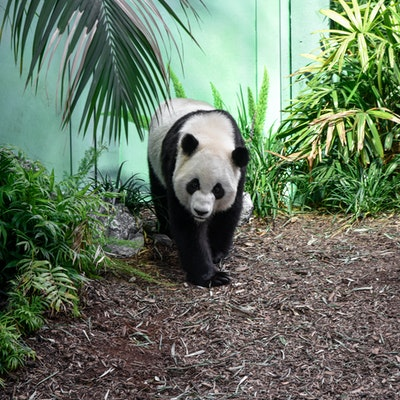
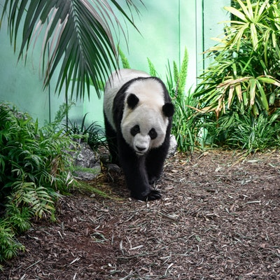

Pandas are cuddly, gentle creatures. Online photographs of grinning people hugging baby pandas may suggest that giant pandas would make perfect pets. ... And in 2007, the first captive-born male reintroduced into the wild died after an apparent fight with other pandas. Attacks on humans are relatively unusual.
 
